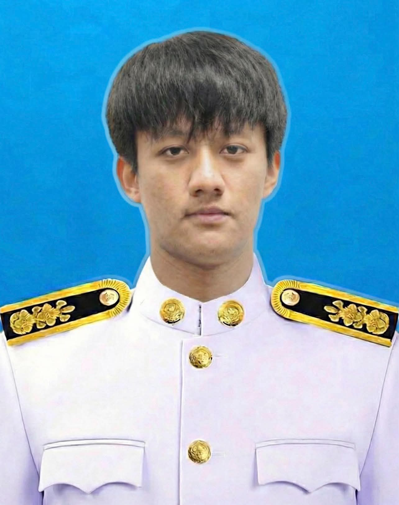
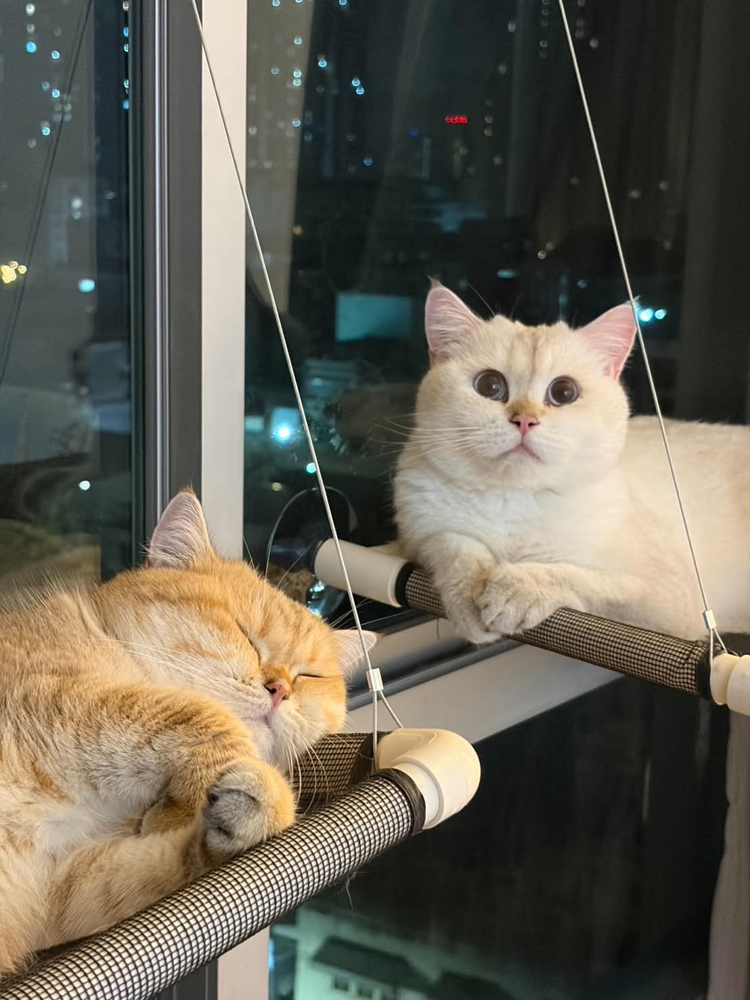

Phanuphong Ley Wongpunsee
วิศวกรไฟฟ้า ระดับ 4 กองจัดการงานระบบไฟฟ้า ฝ่ายก่อสร้างระบบไฟฟ้า สำนักงานใหญ่
Phone: +669-4631-5665 | Email: peley.brazill@gmail.com
เคยชอบเขียนโค้ด แต่แล้ว Passion มันก็ได้หล่นหายไประหว่างทาง เคยมีความฝัน แต่ด้วยเส้นทางสายที่เดิน ด้วยงานที่เคยประสบพบเจอ ทำให้ผมทิ้งการเขียนโค้ดไปจนหมดสิ้น โครงการนี้เหมือนกับเชื้อไฟทำให้ผมกลับมามีไฟลุกโชนอีกครั้ง
Coding & Technical Experience
Project Engineer Intern (Software & Hardware)
Infineon Technologies, Singapore | Jul 19 - Dec 19 (6 mos)
- Developed software (SW) and hardware (HW) for an Adaptive Light Bar (Automotive Lighting Control Unit) in the automotive industry.
- Programmed basic embedded systems and performed low-level programming on ARM Cortex processors.
- Applied C++ programming skills and participated in Printed Circuit Board (PCB) Design.
- Involved in the complete product design cycle, from feasibility studies and engineering design to verification and evaluation.
Education
Chiang Mai University
Bachelor of Electrical Engineering | 2016-2020
- Got a scholarship from excellence award throughout the academic year for 3 years in a row. (2017-2019)
- Attended Winter School Program Chiang Mai - ECAM Lyon 2020.
- Published a paper at The 25th Tri-University International Joint Seminar and Symposium 2018. Participated in MIE-CMU Autumn Camp in Japan 2018.
- Participated in EGAT Engineer CAMP 2018.
- Participated IC Design Camp 2018.
Yupparaj Wittayalai School
High School (Mathematics-Science Program) | 2012-2015
Honors & Certificates
- TOEIC Listening and Reading: Total score is 850
- IEEE Power & Energy Society: High Voltage Substation: Connection Code, Design, Testing and Commissioning
- Certificate of academic excellence: 2017, 2018 and 2019 Academic years
- 1 Publication Research: The study of human prepareness for new era technology in Chiang Mai University
Expertise
- AutoCAD 2D
- E3 (Electrical Wiring Design Software)
- MV&LV Power Protection
- ETAP ver.21
- C Programming / C++
- Embedded Systems (ARM Cortex) & PCB Design
ผมมีลูก 4 คนครับ

^^